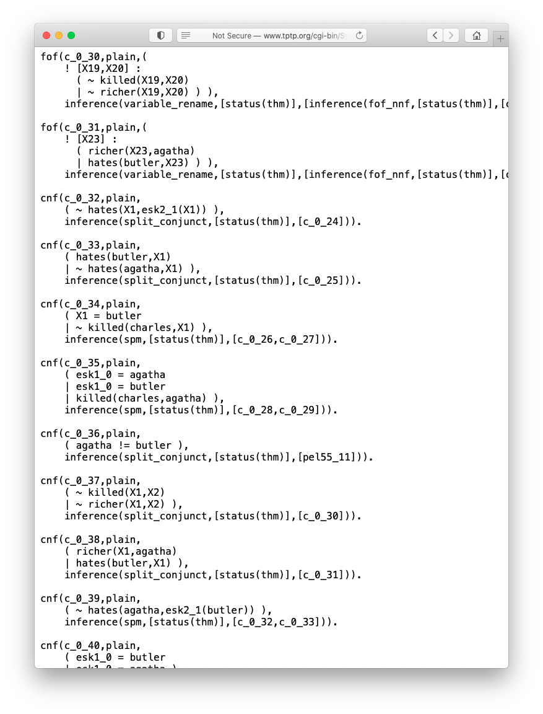
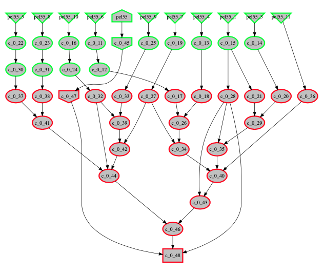
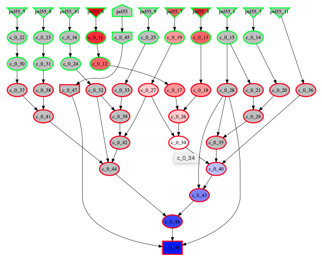
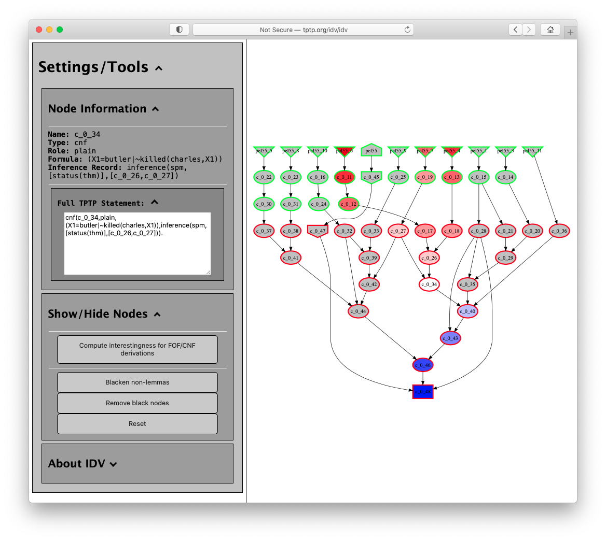
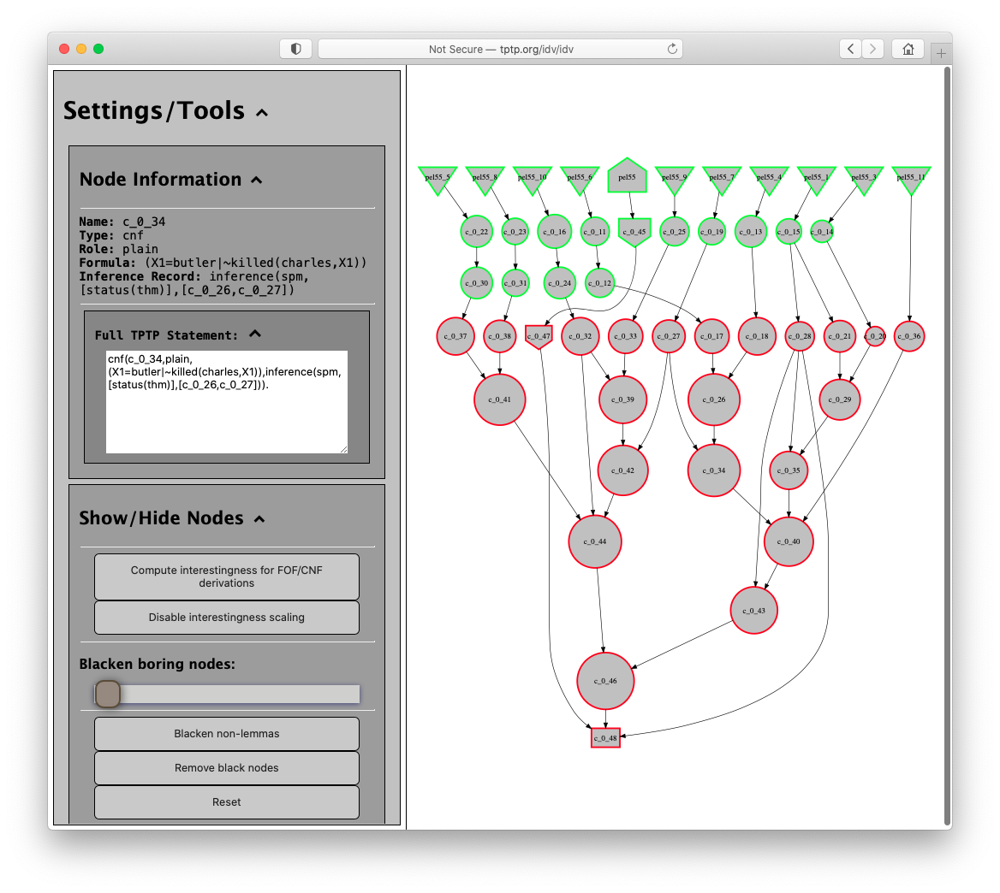
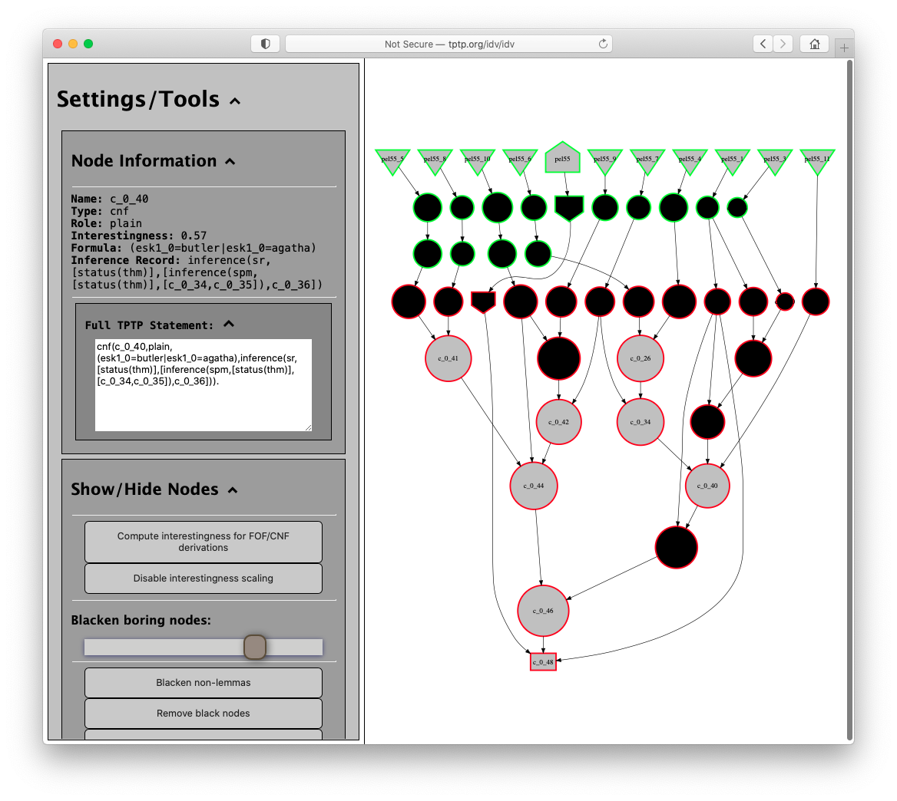
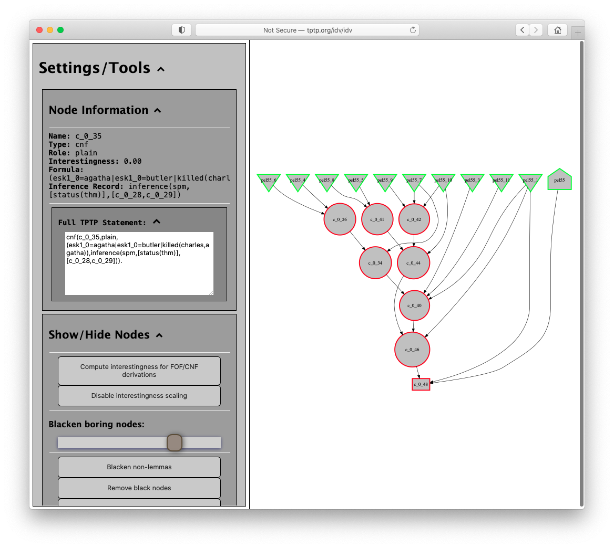

IDV - Interactive Viewing of Derivations

Basic Interaction
- Text derivations are useful but unintuitive for humans
- IDV's graphical rendering provides an easy overview

- Mouse-over highlights ancestors and descendents

- View inference details

Derivation Synopses
- Use AGInTRater to measure interestingness

- The threshold slider blackens boring nodes

- Remove black nodes for a synopsis
